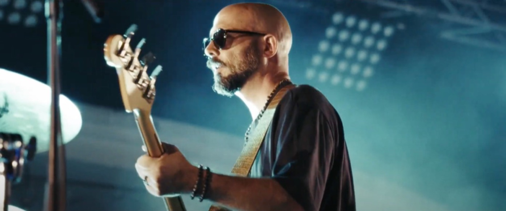
▶ Lire01
Kenzo Fossier, vidéaste en Occitanie. Concerts, clips, événements et reportages — je filme vos moments forts et j'en fais des vidéos qu'on regarde jusqu'au bout.
Ils m'ont fait confiance Ville de Narbonne / Festival Elizik / Mairie de Villeneuve-lès-Béziers / Sacem / Croix-Rouge française / Brand New Coconut / Sophie les Bas Bleus / The Organics

▶ Lire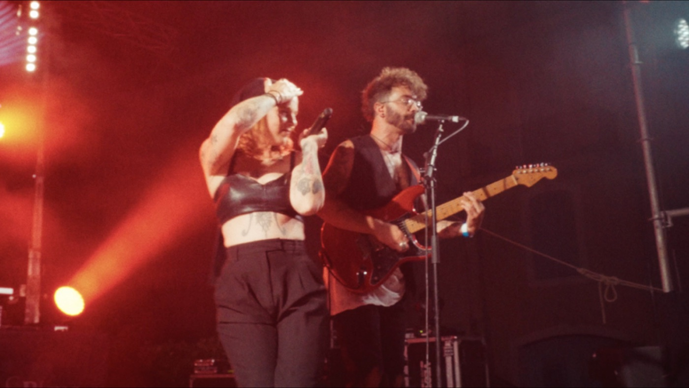
▶ Lire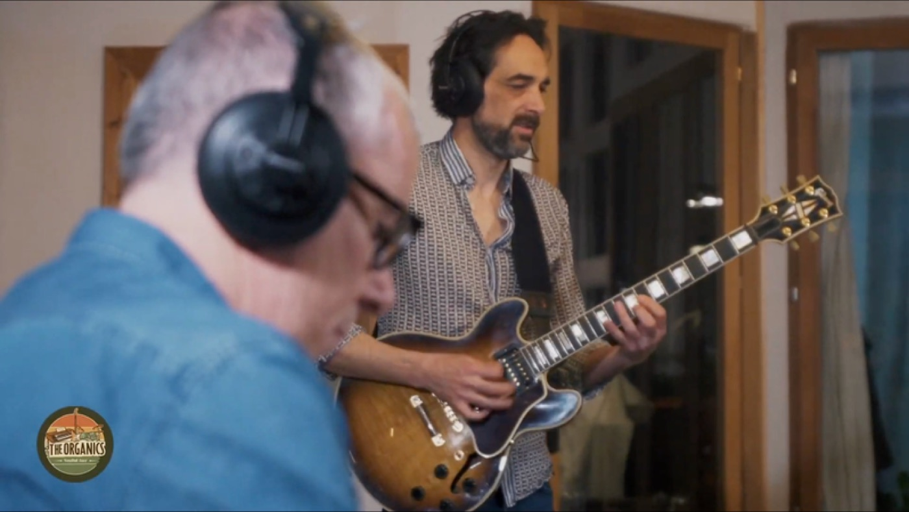
▶ Lire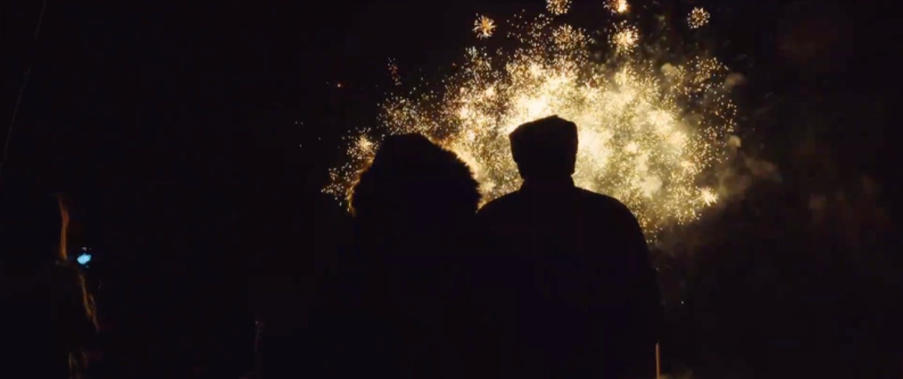
▶ Lire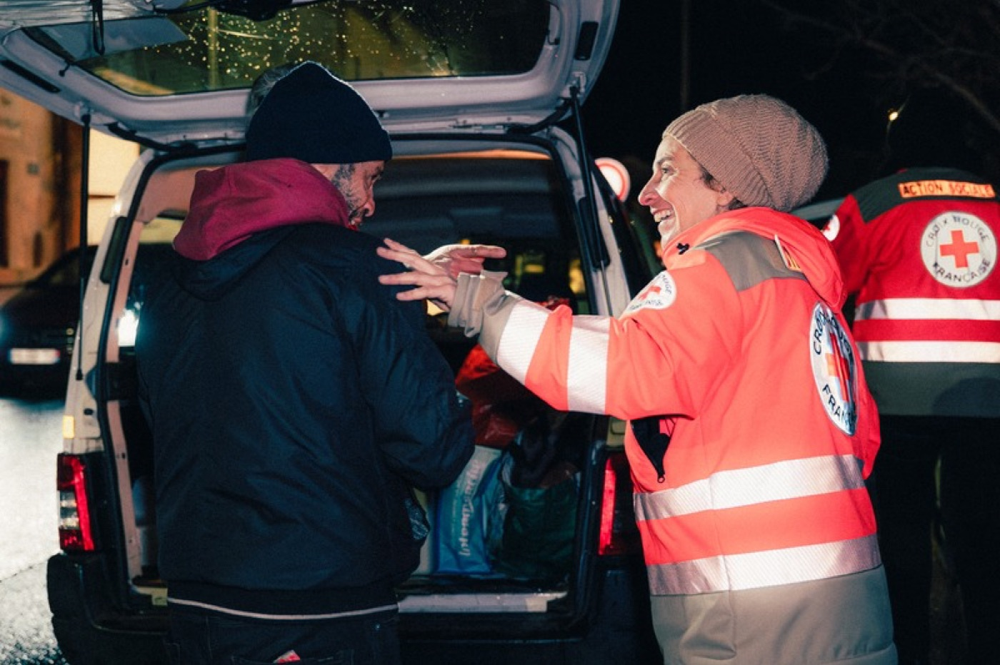
▶ Lire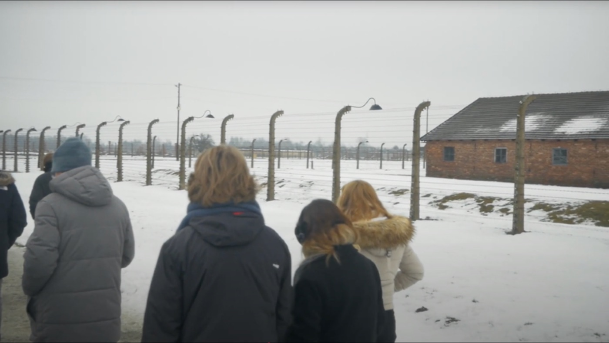
▶ Lire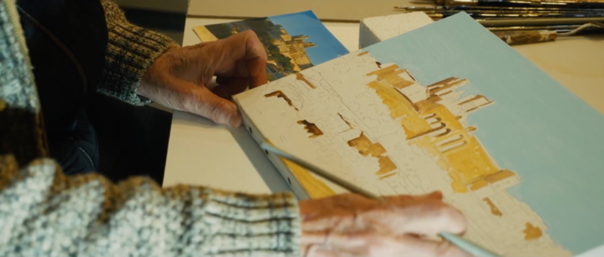
▶ Lire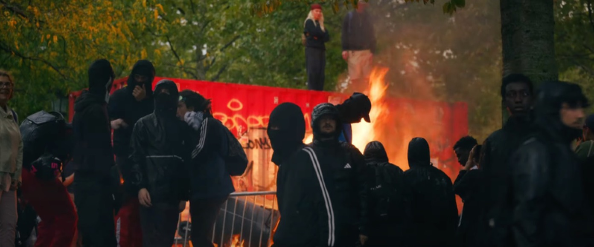
▶ Lire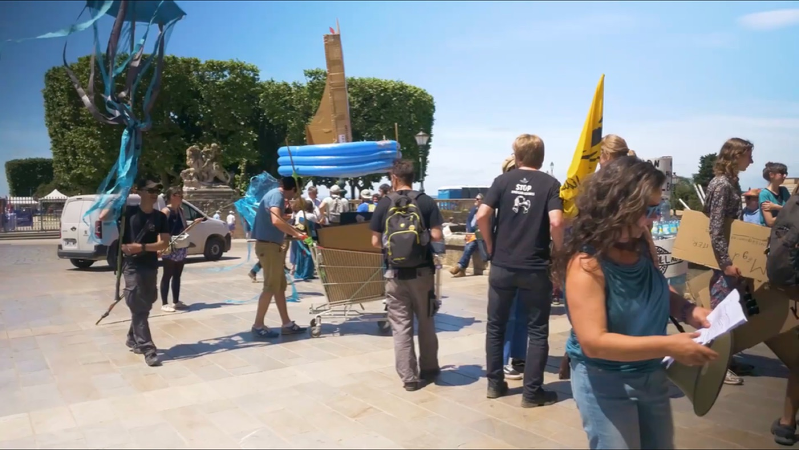
▶ LireVotre énergie de scène, enfin à la hauteur à l'écran. Repérage en répétition, plans dynamiques, son synchronisé, étalonnage soigné.
Artistes, groupes, salles, labelsFestivals, fêtes de ville, inaugurations. Un film souvenir, des formats courts pour communiquer, ou la réalisation live sur écran géant.
Mairies, festivals, associationsRaconter une histoire vraie avec justesse : portraits, sujets de société, films institutionnels. Interviews, terrain, montage narratif.
Associations, entreprises, artistes2 millions de vues sur mes propres vidéos : je sais ce qui retient l'attention dans les premières secondes. Formats verticaux, rythmés, sous-titrés.
Marques, commerces, artistes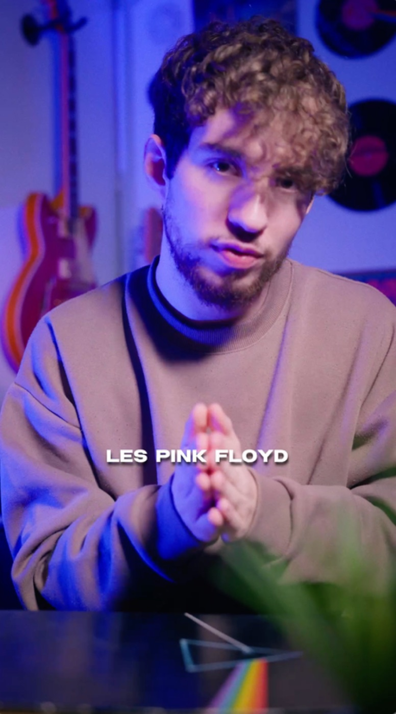
Chaque projet est différent : le tarif se fait sur devis, gratuit et sans engagement.
Obtenir mon devisUn appel ou un message pour comprendre votre projet, vos envies et votre budget. Vous recevez un devis clair.
Repérage, choix des morceaux ou des moments clés, plan de tournage. Rien n'est laissé au hasard le jour J.
Sur place, en autonomie, discret et réactif. Vous profitez de votre événement, je m'occupe des images.
Montage, étalonnage, son. Une version à valider, vos retours intégrés, puis les fichiers pour chaque plateforme.
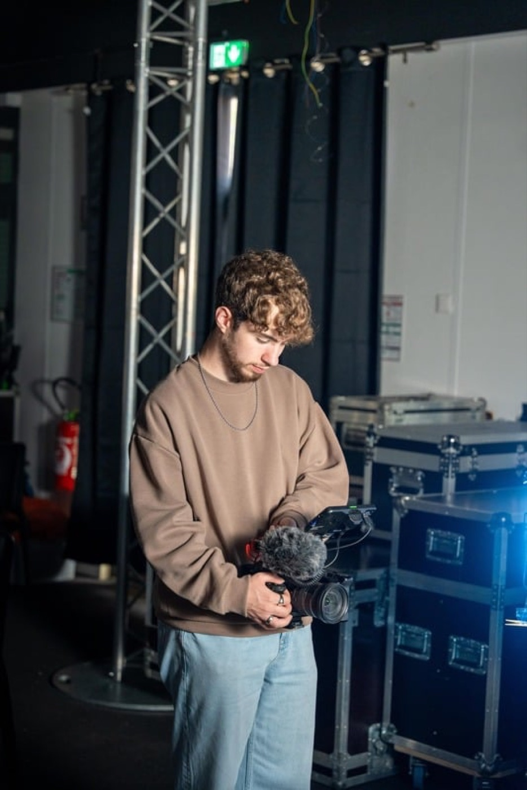
Je filme depuis bientôt cinq ans. D'abord pour mes propres réseaux — plus de 20 000 abonnés, 2 millions de vues, une collaboration avec la Sacem — puis pour des artistes, des villes et des associations.
Passé par une école de cinéma (ACFA Multimédia), j'ai été chef opérateur sur un court-métrage, tourné un documentaire à Auschwitz, couvert des mouvements sociaux et rejoint la communication de la Croix-Rouge française.
En 2025, j'ai fondé Echoes Films avec une idée simple : créer avec vous un film qui fera écho chez ceux qui le regarderont.
« Son regard artistique, sa sensibilité et son exigence technique ont véritablement sublimé notre univers. »
Kenzo a réalisé de façon magistrale, soignée et en toute autonomie la projection du live sur grand écran durant tout le Festival Elizik. Professionnel sérieux et discret, il est avant tout passionné par son métier.
Échanges hyper professionnels, conseils sur le choix des morceaux en venant à une répétition. Plans dynamiques, image vraiment très qualitative. Nous referons appel à Kenzo sans hésiter !
Tu as un beau regard artistique et en plus une efficacité redoutable ! Engagez ce garçon les yeux fermés !
Le prix dépend de la durée de tournage, du nombre de caméras et du montage attendu. Décrivez votre projet : je vous envoie un devis détaillé, gratuit et sans engagement.
Partout en Occitanie (Narbonne, Béziers, Montpellier, Perpignan, Toulouse…) et au-delà sur demande : les frais de déplacement sont indiqués dans le devis.
Ils dépendent du projet et sont fixés ensemble avant le tournage. Pour un événement, des extraits courts peuvent sortir rapidement pour profiter de l'élan sur les réseaux, puis le film complet ensuite.
C'est suffisant pour commencer. On construit le concept ensemble lors du premier échange.
Horizontal pour YouTube et les écrans, vertical pour Instagram et TikTok, avec ou sans sous-titres. Des fichiers prêts à publier.
Concert, clip, événement, reportage… Dites-m'en quelques mots, je reviens vers vous avec des idées et un devis.